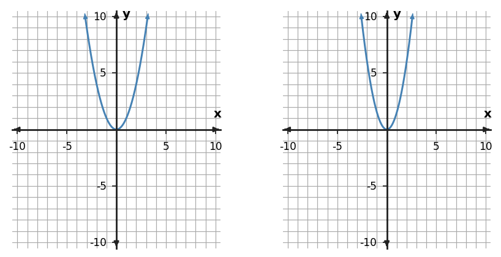

Algebra Practice 4.3 :::: Set 2
1. For $f(x)=|x|$, compare $g(x)=-3f(x)$ with the table of points $(-2,-6), (-1,-3), (0,0), (1,-3), (2,-6)$. Do the equation and table represent the same transformed function? Explain.
2. A student says multiplying $f(x)$ by 4 moves its graph right 4 units. Correct the transformation description.
3. Describe the transformation from $y=x^2$ to $y=-6x^2$.
4. The parent values come from $y=x^2$. Apply the rule $g(x)=1.25f(x)$ and complete the transformed y-values.
| x | Parent y | Transformed y |
|---|---|---|
| -2 | 4 | ? |
| -1 | 1 | ? |
| 0 | 0 | ? |
| 1 | 1 | ? |
| 2 | 4 | ? |
5. Compare the left parent graph and the right transformed graph. Describe the transformation using stretch/compression/reflection language.

6. The parent values come from $y=x^2$. Apply the rule $g(x)=-1.5f(x)$ and complete the transformed y-values.
| x | Parent y | Transformed y |
|---|---|---|
| -2 | 4 | ? |
| -1 | 1 | ? |
| 0 | 0 | ? |
| 1 | 1 | ? |
| 2 | 4 | ? |
7. Use the graph pair to describe how a key point changes under the transformation. Give one correct point mapping.

8. Describe the transformation from $y=x^2$ to $y=2.5x^2$.
9. The parent values come from $y=x^2$. Apply the rule $g(x)=-2.5f(x)$ and complete the transformed y-values.
| x | Parent y | Transformed y |
|---|---|---|
| -2 | 4 | ? |
| -1 | 1 | ? |
| 0 | 0 | ? |
| 1 | 1 | ? |
| 2 | 4 | ? |
10. Compare the left parent graph and the right transformed graph. Describe the transformation using stretch/compression/reflection language.

11. Apply the rule $g(x)=-0.5|x|+2$ to $f(x)=|x|$ and check the table values. Do all key points follow the rule?
| x | table value |
|---|---|
| -2 | 1 |
| -1 | 1.5 |
| 0 | 2 |
| 1 | 1.5 |
| 2 | 1 |
12. Explain why multiplying only the vertex of a parabola by a scale factor of 3 while leaving the other points unchanged does not produce a valid vertical stretch.
13. A table is claimed to represent $g(x)=-0.5f(x)$ for $f(x)=x^2$. Check the table and identify any incorrect transformed value.
| x | claimed $g(x)$ |
|---|---|
| -2 | -2 |
| -1 | -0.5 |
| 0 | 0 |
| 1 | -0.5 |
| 2 | -1 |
14. The right graph is claimed to match $g(x)=-f(x)+3$. Assess the claim using the visible shape and key features.

15. The right graph is claimed to match $g(x)=\frac{1}{3}f(x)$. Assess the claim using the visible shape and key features.

16. Assess whether $g(x)=3|x|$ and the table represent the same transformed function.
| x | table value |
|---|---|
| -2 | 6 |
| -1 | 3 |
| 0 | 0 |
| 1 | 3 |
| 2 | 8 |
17. A student reflects only the points with x-values greater than -2 across the x-axis and calls the result a reflection of the whole function. Diagnose the error.
18. Describe the transformation from $y=x^2$ to $y=3x^2$.
19. Describe the solution region for the system $y\gt x-2$ and $y\le x-2$, including which boundary is dashed and which is solid.
20. Describe the solution region for the system $y\gt-x+2$ and $y\le 2x+4$, including which boundary is dashed and which is solid.
21. Describe the solution region for the system $y\gt-2x-3$ and $y\le -2x-1$, including which boundary is dashed and which is solid.
22. Find and interpret the slope from $(0,1)$ to $(1,3)$. Treat $x$ as hours and $y$ as miles from a reference point.
23. Find and interpret the slope from $(1,3)$ to $(3,1)$. Treat $x$ as hours and $y$ as miles from a reference point.
24. Find and interpret the slope from $(2,-3)$ to $(5,-1.5)$. Treat $x$ as hours and $y$ as miles from a reference point.